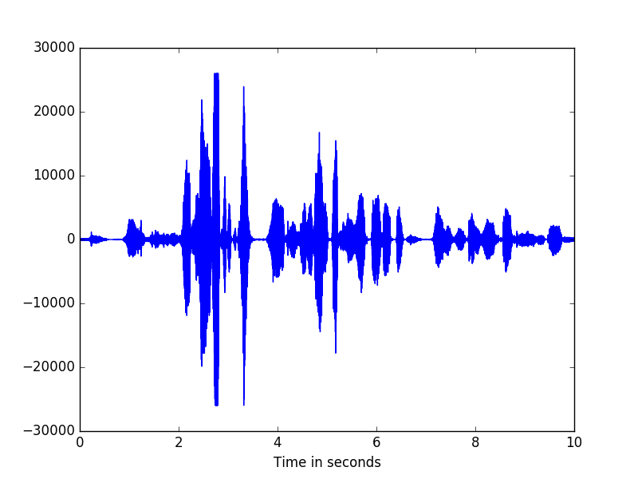
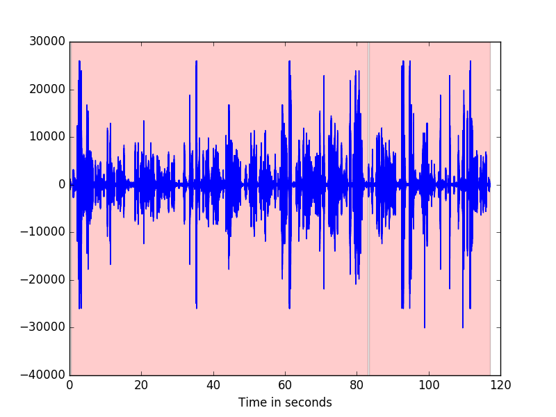

1.3. Quick Start¶
To run the examples, make sure you have downloaded both examples.tar.gz and models.tar.gz. Unpack the examples into any directory, and then unpack the models inside this examples directory.
To see the example simply run:
python example_<some_example>.py
Below are walk-through guides to the examples.
1.3.1. Examples¶
Note
Following any of the examples on this page requires that you are in the examples directory (otherwise you will need to change the filepaths.)
1.3.1.1. example_signal¶
Open the python interpreter and import the following:
>>> from pyslgr.LLSignal import LLSignal
>>> import numpy as np
>>> import matplotlib.pyplot as plt
To create an instance of LLSignal
>>> sig = LLSignal()
We can read the a test signal from file. Pyslgr has a few example signals already built in, we will use one of these.
>>> sig.load_sph('signals/example.sph', 0)
We will visualize the signal in the time domain. We will calculate and display the first 10 seconds.
>>> seconds = 10
>>> sf = sig.sampling_frequency()
>>> z = range(0, seconds*int(sf))
>>> t = (1.0/sf)*np.array(z)
>>> plt.plot(t, sig[0:len(z)])
>>> plt.xlabel("Time in seconds")
>>> plt.show()
The signal looks like this:
To get the pitch of the signal, use get_f0()
>>> f0 = sig.get_f0(100,650,0.010,0.005)
>>> f0[0][200:205]
array([ 126.44771576, 125.1450882 , 123.85125732, 123.43418884, 123.18312073])
Signals can be sliced using the same syntax as numpy. For instance, sig[0:10] returns the first 10 samples of the signal
>>> sig[0:10]
Using negative indices will give the last n values of the signal
>>> sig[-1]
returns the last value in sig.
Slices [m:n] where m >= n will return empty arrays. To test this, try
>>> sig[3:1]
>>> sig[3:3]
For a slice [m:n] where n > sig.length(), clipping will occur and only m:sig.length() is returned
>>> sig[-1:sig.length()+10]
array([ 16.])
>>> sig[-1]
16.0
Strides and reversals are also possible. sig[20::3] returns every 3rd element starting with the 20th element. sig[10:-2] returns every second element starting at the 10th element as indices decrease.
Using slices, we can plot portions of the signal. Here we look at 5 seconds of the signal from 3 seconds to 8 seconds.
>>> min_seconds = 2
>>> max_seconds = 4
>>> z = range(min_seconds*int(sf), max_seconds*int(sf))
>>> t = (1.0/sf)*np.array(z)
>>> plt.plot(t, sig[min_seconds*int(sf):max_seconds*int(sf)])
>>> plt.xlabel("Time in seconds")
>>> plt.show()
To check the frequency at which the signal was sampled, use the following
>>> sig.sampling_frequency()
8000.0
We can downsample by resampling
>>> sig.resample_8k()
>>> sig.sampling_frequency()
8000.0
>>> sig.save_pcm_wav(<filename>)
There also several options for pre-processing the data, including mean removal, amplitude normalization, and preemphasis.
>>> sig.remove_mean()
>>> sig.normalize()
>>> sig.preemphasize(0.97)
1.3.1.2. example_mfcc¶
Note
We will use the LLSignal class in this example. To familiarize yourself with this class, please see example_signal.
Note
MFCCFeatures extends :class: ~pyslgr.LLFeatures.LLFeatures
To begin we will want to import the relevent modules:
>>> import json
>>> from pyslgr.LLSignal import LLSignal
>>> from pyslgr.MFCCFeatures import MFCCFeatures
Processing the signal in order to obtain mel-frequency cepstral coefficient (MFCC) features, requires a config file (in json format). We will load in the default feature config file and make modifications. Then we will restore it for use.
We begin by loading the config file.
>>> fp = open('config/lid_config.json','r')
>>> c = json.load(fp)
>>> fp.close()
For the purpose of this example we will set fb_only to true. To see all the config options, see process() fb_only produces the ‘raw’ filter bank outputs instead of producing cepstral coefficients.
>>> feat_config = c['lid_config']['feat_config']
>>> feat_config['fb_only'] = 'true'
Now we save this a new config file.
>>> mfcc_config = json.dumps(feat_config)
To check whether our change took effect,
>>> print 'MFCC features configuration: {}'.format(mfcc_config)
MFCC features configuration: {"fb_only": "true", "fb_hi": "3140", "win_inc_ms": "10", "linear": "false", "feat_type": "mfcc", "fb_low": "300", "win_len_ms": "20", "alpha": "1", "num_cep": "6", "keep_c0": "true", "dither": "1"}
And, indeed fb_only has been set to true. We can also review the other configuration settings.
We now load in the sample signal just as in example_signal.
>>> fn = 'signals/example.sph'
>>> sig = LLSignal()
>>> sig.load_sph(fn, 0)
To get features, we make an instance of the MFCCFeatures class and call process()
>>> feats = MFCCFeatures(mfcc_config)
>>> feats.process(sig)
>>> feats.delta(2)
>>> feats.accel(2)
See also
See MFCC Features for more information on the delta() and accel().
You can also try out the various slicing and indexing operations.
Note
Single vectors are printed to console as a list of entries read from left to right. Multiple vectorss are printed to console as columns, each column represents a vector.
Here are some examples:
>>> feats[0] #gets the first vector
>>> feats[-1] #gets the last vector
>>> feats[0:3] #gets vectors 0 through 3
>>> feats[-3:-1] #gets third to last vector through last vector
>>> feats[0:5:2] #gets vectors 0,2,4
>>> feats[1:1] #produces an empty array
Let us now look at a few basic SAD (Speech Activity Detection) tools
First we need to create a temporary directory to store our results
>>> import os.path
>>> if not os.path.exists('tmp'):
os.mkdir('tmp')
We will create sad labels and marks for the sample signal and save them.
>>> feats.xtalk(-10, 5, 5)
>>> feats.save_sad_labels(os.path.join('tmp', os.path.basename(fn) + '.lbl'))
>>> feats.save_sad_marks(os.path.join('tmp', os.path.basename(fn) + '.mark'))
To access the SAD labels directly, we can use the following
>>> lbl = feats.sad_labels()
>>> feats.apply_sad()
>>> print 'a few SAD labels: {}'.format(lbl[0:100])
>>> print 'Number of frames is : {}'.format(f.num_vec())
See also
For more information on SAD, click here.
If we wish to save the features as raw floats, we can do so:
>>> feats.save_raw(os.path.join('tmp', os.path.basename(fn) + '.feats.dat'))
1.3.1.3. example_mfcc_fb¶
This example shows how to use ‘raw’ filter bank outputs instead of MFCC Features.
To begin, we will import all relevant modules.
>>> from pyslgr.LLSignal import LLSignal
>>> from pyslgr.MFCCFeatures import MFCCFeatures
>>> import json
Next we will load in the example signal:
>>> sig = LLSignal()
>>> sig.load_sph('signals/example.sph', 0)
>>> sig.resample_8k()
We will need a configuration file. One has already been created, however will we modify it to meet our needs.
>>> fp = open('config/lid_config.json','r')
>>> c = json.load(fp)
>>> fp.close()
>>> feat_config = c['lid_config']['feat_config']
>>> feat_config['fb_only'] = True
>>> feat_config['linear'] = True
>>> feat_config['win_len_ms'] = 20
>>> feat_config['tgt_num_filt'] = 100
>>> mfcc_config = json.dumps(feat_config)
>>> print 'MFCC features configuration: {}'.format(mfcc_config)
To get features, we make an instance of the MFCCFeatures class and call process()
>>> feat = MFCCFeatures(mfcc_config)
>>> feat.process(sig)
>>> feat.set_outfeat('f')
See also
For more information on the set_outfeat() function, click here.
We can now check how many features we calculated.
>>> print 'Number of output features {}'.format(f.num_outfeat())
>>> delta_f = 0.5*sig.sampling_frequency() / (feat_config['tgt_num_filt']+1)
>>> fb_range = float(feat_config['fb_hi'])-float(feat_config['fb_low'])
>>> print 'Approx num of feats: {}'.format(fb_range/delta_f)
We can plot our fetaures.
>>> import matplotlib.pyplot as plt
>>> feats = feat[:]
>>> plt.imshow(feats[-1::-1,0:500], aspect='auto')
>>> plt.show()
1.3.1.4. example_feat_pipe¶
This example demonstrates how to quickly create a pipeline that extracts features. Example_gmmsad demonstrates the manual process for feature extraction that the pipeline in this example achieves.
To begin, we will import all relevant modules.
>>> from pyslgr.GMMModel import GMMSAD
>>> from pyslgr.LLSignal import LLSignal
>>> from pyslgr.MFCCFeatures import MFCCFeatures
>>> from pyslgr.FeatPipe import FeatPipe
>>> from pyslgr.sad import XtalkSAD
>>> import json
Next we will load in the example signal:
>>> sig = LLSignal()
>>> sig.load_sph('signals/example.sph', 0)
Now we will need the configuration file for the pipeline. There is already such a configuration file which has been set up for this example.
>>> with open('config/lid_mfcc+gmmsad_pipe.json', 'r') as fid:
pipe_config = json.load(fid)
>>> print 'Pipeline configuration: {}'.format(pipe_config)
We can now apply the pipeline. It will reture a MFCCFeatures object.
>>> pipe = FeatPipe(pipe_config, MFCCFeatures, GMMSAD)
>>> feat = pip.process(sig)
To gain insight into what the pipeline has accomplished, we can print out a few of the calculation results.
>>> print 'Number of base features: {}'.format(feat.num_base_feat())
>>> print 'Number of output features: {}'.format(feat.num_outfeat())
>>> print 'Number of frames is : {}'.format(feat.num_vec())
>>> print 'Frame rate: {}'.format(feat.get_win_inc_ms())
>>> print 'Duration in seconds is: {}'.format(feat.duration())
We can also store our results. To accomplish this, we will check if a tmp directory already exists, otherwise we will create one.
>>> import os.path
>>> if not os.path.exists('tmp'):
os.mkdir('tmp')
Then we can save our features:
>>> print '\nSaving features to tmp/{}.full_feat_ext.dat as raw floats.'.format('example')
>>> feat.save_raw(os.path.join('tmp', 'example' + '.feat_ext.dat'))
1.3.1.5. example_lid_pipe_gmm¶
This example shows how to set up a pipeline that can be used for Language Identification (lid).
To begin this example, we will need to import all the relevant modules
>>> from pyslgr.GMMModel import GMMSAD
>>> from pyslgr.LLSignal import LLSignal
>>> from pyslgr.MFCCFeatures import MFCCFeatures
>>> from pyslgr.FeatPipe import FeatPipe
>>> from pyslgr.sad import XtalkSAD
>>> from pyslgr.GMMModel import GMMModel
>>> import json
>>> import os
First, we will load our example signal.
>>> sig = LLSignal()
>>> sig.load_sph('signals/example.sph', 0)
Now, we need to load in the configuration file for the pipeline. A configuration file has already been setup for this example.
>>> with open('config/lid_mfcc+gmmsad_pipe.json') as fp:
pipe_config = json.load(fp)
We can now run the pipeline. It will return an MFCCFeatures object.
>>> pipe = FeatPipe(pipe_config, MFCCFeatures, GMMSAD)
>>> feat = pipe.process(sig)
We can now use PySLGR to identify the language of your example signal.
Start by creating a GMMModel object.
>>> g_ubm = GMMModel()
>>> g_ubm.load('models/language/sbkg.o1024-sdc-rasta-fn-fnap.mod')
We will now load in the pre-existing language models.
>>> with open('config/lid_config.json') as fp:
slgr_config = json.load(fp)
>>> model_names = sorted(slgr_config['lid_config']['models'].values())
>>> g_langs=[]
>>> for i in xrange(0, len(model_names)):
g_langs.append(GMMModel())
g_langs[i].load(os.path.join('models', model_names[i]))
The next step is to score the models.
>>> allScores = g_ubm.score_models(feat, g_langs, 5, True, 10.0)
>>> modelScores = allScores.scores
>>> scores_out[]
>>> for i in xrange(0, modelScores.size, 2):
scores_out.append((model_names[i], modelScore[i+1] - modelScores[i]))
>>> print 'scores: {}'.format(scores_out)
>>> print 'UBM score = ', allScores.ubm_score
1.3.1.6. example_lid_gmm¶
In this example, we will demonstrate the language identification (lid) capabilities of PySLGR.
To begin this example, we will want to import all the relevant modules
>>> from pyslgr.LLSignal import LLSignal
>>> from pyslgr.MFCCFeatures import MFCCFeatures
>>> from pyslgr.GMMModel import GMMModel
>>> import json
>>> import os
>>> import operator
Now we would like to load our example signal.
>>> sig = LLSignal()
>>> sig.load_sph('signals/example.sph', 0)
As in example_mfcc, we need to set up the config file for our MFCC features.
>>> slgr_config_fn = 'config/lid_config.json'
>>> fp = open(slgr_config_fn,'r')
>>> c = json.load(fp)
>>> fp.close()
>>> mfcc_config = json.dumps(c['lid_config']['feat_config'])
For this example, we will also need models. These models can be found in the /nmec/slgr/model directory
>>> model_dir = 'models'
>>> model_names = sorted(c['lid_config']['models'].values())
We initialize the MFCC features as in example_mfcc. For more details on how to use the set_outfeat() function, see Understanding set_outfeat() .
>>> feats = MFCCFeatures(mfcc_config)
>>> feats.process(sig)
>>> feats.rasta()
>>> feats.delta2point(1)
>>> feats.sdc(3,7)
>>> feats.xtalk(-10.0,5.0)
>>> feats.apply_sad()
>>> feats.feat_norm()
>>> feats.set_outfeat('fs')
Now we will create the GMM model object.
>>> g_ubm = GMMModel()
>>> g_ubm.load(os.path.join(model_dir,"language", "sbkg.o1024-sdc-rasta-fn-fnap.mod"))
To get models for all available languages.
>>> g_langs = []
>>> for i in xrange(0, len(model_names)):
g_langs.append(GMMModel())
g_langs[i].load(os.path.join(model_dir, model_names[i]))
To get the scores:
>>> allScores = g_ubm.score_models(feats, g_langs, 5, True, 10.0)
>>> modelScores = allScores.scores
>>> scores_out = []
>>> for i in xrange(0,modelScores.size,2):
scores_out.append((model_names[i], modelScores[i+1]-modelScores[i]))
>>> scores_out = sorted(scores_out, key=operator.itemgetter(1))
>>> print 'scores: {}'.format(scores_out)
>>> print "UBM score =", allScores.ubm_score
UBM score = -71.3863830566
1.3.1.7. example_gmmsad¶
For this example, we will need to import the following python modules:
>>> from pyslgr.LLSignal import LLSignal
>>> from pyslgr.MFCCFeatures import MFCCFeatures
>>> from pyslgr.GMMModel import GMMSAD
>>> import json
>>> import operator
Now we need to load the relevant config files. They are stored as .json files in the config directory.
>>> fn = open('config/gmmsad_params.json', 'r')
>>> c = json.load(fn)
>>> fn.close()
>>> feat_config = json.dumps(c['feat_config'])
We will also load the relevant models. We will use models for ‘non-speech, ‘speech’, and ‘music.’
>>> model_dir = 'models'
>>> model_files = c['gmm_models']
>>> print 'Using models: {}'.format(model_files)
Using models: {u'music': u'sad/sMUSIC3.o128-rasta-mfb2-21-cep+dcep.mod', u'speech': u'sad/sSPEECH.o128-rasta-mfb2-21-cep+dcep.mod', u'nonspeech': u'sad/sNONSPEECH.o128-rasta-mfb2-21-cep+dcep.mod'}
We grab the example audio signal...
>>> sig = LLSignal()
>>> sig.load_sph('signals/example.sph', 0)
Now that everything is set up, we can use our GMM to detect speech activity. This is called Speech Activity Detection (SAD).
See also
More information about SAD can be found here
Run:
>>> gmmsad = GMMSAD(feat_config, model_dir, model_files)
>>> sad_marks = gmmsad.process(sig, None)
>>> print 'sad marks : {}'.format(sad_marks)
sad marks : [(0.35999998450279236, 82.58999633789062), (83.47999572753906, 34.01000213623047)]
Since our example is mainly speech, almost the entire signal is selected. We can now visualize our results:
The following code will produce the image above.
>>> import matplotlib.pyplot as plt
>>> import numpy as np
>>> max_seconds = int(sad_marks[1][0]+sad_marks[1][1])
>>> marks = []
>>> for mark in sad_marks:
marks.append((mark[0],mark[0]+mark[1]))
>>> sf = sig.sampling_frequency()
>>> z = range(0, max_seconds*int(sf))
>>> t = (1.0/sf)*np.array(z)
>>> plt.plot(t, sig[0:len(z)])
>>> plt.xlabel('Time in seconds')
>>> for mark in marks:
if(mark[1] > max_seconds):
plt.axvspan(mark[0], max_seconds, facecolor='r', alpha=0.2)
else:
plt.axvspan(mark[0], mark[1], facecolor='r', alpha=0.2)
>>> plt.show()
We can also load the SAD marks into a Features object.
>>> fp = open('config/lid_config.json','r')
>>> c = json.load(fp)
>>> fp.close()
>>> feat_config = c['lid_config']['feat_config']
>>> feat_config['fb_only'] = 'true'
>>> mfcc_config = json.dumps(feat_config)
>>> feat = MFCCFeatures(mfcc_config)
>>> feat.process(sig)
>>> feat.load_sad_marks(sad_marks)
Saving these marks to file is also possible.
First we will check to see if a tmp directory exists, otherwise we will create one.
>>> import os.path
>>> if not os.path.exists('tmp'):
os.mkdir('tmp')
Next we can save the marks to file.
>>> feat.save_sad_marks('tmp/eg.mark')
1.3.1.8. example_ivec¶
This example demonstrates how to extract ivectors using PySLGR.
To begin this example, we import all of the relevant modules.
>>> import json
>>> from pyslgr.GMMModel import GMMSAD
>>> from pyslgr.iVector import iVector
>>> from pyslgr.LLSignal import LLSignal
>>> from pyslgr.MFCCFeatures import MFCCFeatures
>>> from pyslgr.FeatPipe import FeatPipe
We will now load in the example signal.
>>> sig = LLSignal()
>>> sig.load_sph('signals/example.sph', 0)
Then, we will use the same pipeline as in example_feat_pipe.
>>> with open('config/sid_mfcc+gmmsad_pipe.json', 'r') as fid:
pipe_config = json.load(fid)
>>> pipe = FeatPipe(pipe_config, MFCCFeatures, GMMSAD)
>>> feat = pipe.process(sig)
We can check the number of output features.
>>> print 'Number of output features: {}'.format(feat.num_outfeat())
Finally, we can compute the ivector by loading in the example configuration file.
>>> with open('config/ivec.json') as fp:
config = json.load(fp)
>>> ivec = iVector(config)
>>> v = ivec.process(feat)
To take a look at a few of the calculated ivectors, simply:
>>> print 'A few elements of iVector: {}'.format(v[0:10])
To check the dimesnsions of the iVector:
>>> print 'iVector dimension: {}'.format(len(v))
1.3.1.9. example_gsv¶
This example demonstrates the capability to compute the Guassian Supervector (GSV) expansion using PySLGR.
First, we will want to import all the relevant modules.
>>> import json
>>> from pyslgr.GMMModel import GMMSAD
>>> from pyslgr.GSV import GSV
>>> from pyslgr.LLSignal import LLSignal
>>> from pyslgr.MFCCFeatures import MFCCFeatures
>>> from pyslgr.FeatPipe import FeatPipe
>>> from pyslgr.sad import XtalkSAD
Next we will load an example signal.
>>> sig = LLSignal()
>>> sig.load_sph('signals/example.sph', 0)
We will use the feature pipeline to quickly compute MFCC features.
>>> mfcc_pipe_fn = "config/sid_mfcc+gmmsad_pipe.json"
>>> with open(mfcc_pipe_fn, 'r') as fp:
pipe_config = json.load(fp)
>>> pipe = FeatPipe(pipe_config, MFCCFeatures, GMMSAD)
>>> feat = pipe.process(x)
To compute GSV expansion, we will first need to load a configuration file. This file is available in the config directory.
>>> with open('config/gsv.json', 'r') as fp:
config = json.load(fp)
>>> gsv = GSV(config)
Now we can compute a GSV expansion.
>>> v = gsv.process(feat)
>>> print 'A few elements of GSV expansion: {}'.format(v[0:10])
>>> print 'GSV expansion dimension = {}'.format(len(v))